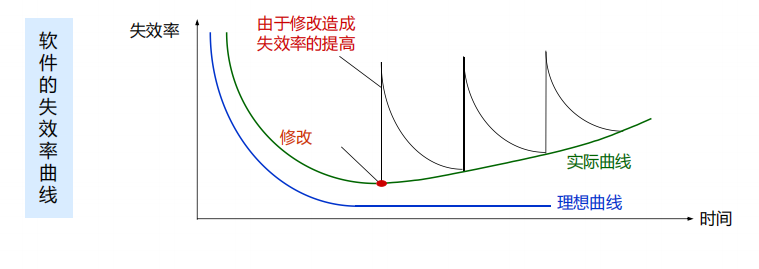
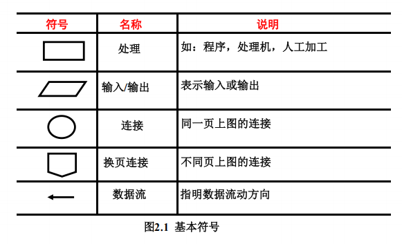
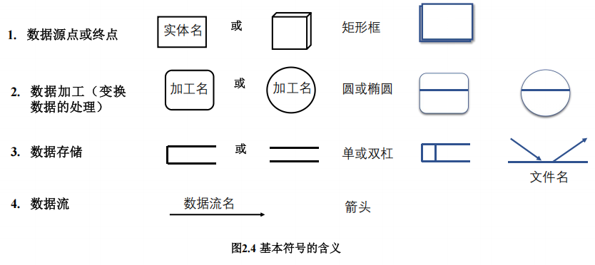

软件工程笔记
软件工程概论
- 软件的概念：软件 = 程序 + 数据 + 文档
- 软件的分类：系统软件、支撑软件、应用软件
- 软件危机

- 软件工程定义：是指导计算机软件开发和维护的一门工程学科
- 软件工程三要素：方法、工具、过程
- 软件生命周期：软件定义（问题定义、可行性研究、需求分析）、软件开发（总体设计、详细设计、编码和单元测试、综合测试）、运行维护（维护）
- 软件维护分类：预防性维护、改正性维护、适应性维护、完善性维护
- 软件过程：瀑布模型、快速原型模型、增量模型、螺旋模型（强调风险分析）、喷泉模型（面向对象，联想一下瀑布模型，刚好相反）、Rational 统一过程（面向对象）、敏捷过程与极限编程、微软过程、
PSP/TSP
可行性研究
- 回答：所有定义的问题都有解决办法吗？
- 目的：最小代价、最短时间确定问题是否有解、值得解
- 三行：技术可行性、经济可行性、操作可行性
- 系统流程图

- 数据流图

- 数据字典：对数据流图中包含的所有元素的定义的集合。定义 4 类元素：数据流、数据元素、数据存储、处理
数据字典定义实例
数据元素编号：DC001
数据元素名称：考试成绩
别名：成绩、分数
简述：学生考试成绩，分五个等级
类型长度：两个字节，字符类型
取值/含义：优 [90-100]，良 [80-89]，中 [70-79]，及格 [60-69]，不及格 [0-59] 有关数据项或结构：学生成绩档案
有关处理逻辑：计算成绩
- 成本/效益分析
成本估计：代码行技术（软件成本 = 每行代码的平均成本 × 估计的源代码总行数）、任务分解技术、自动估计成本技术
成本估计的经验模型：1978年
Putnam提出的，一种动态多变量模型。 $L=C_k\cdot K^{1/3} \cdot t_d^{4/3}$成本估计模型：
COCOMO模型（基本COCOMO模型、中级COCOMO模型、详细COCOMO模型）），这模型是精确的、定量的好模型。在这里项目的开发类型分为 3 种：组织型、嵌入型、半独立型。
需求分析
- 目的：准确回答系统必须做什么
- 输出：经过审查的《软件需求规格说明书》
- 数据模型（E-R 图）⇒ 功能模型（数据流图）⇒ 行为模型（状态图）